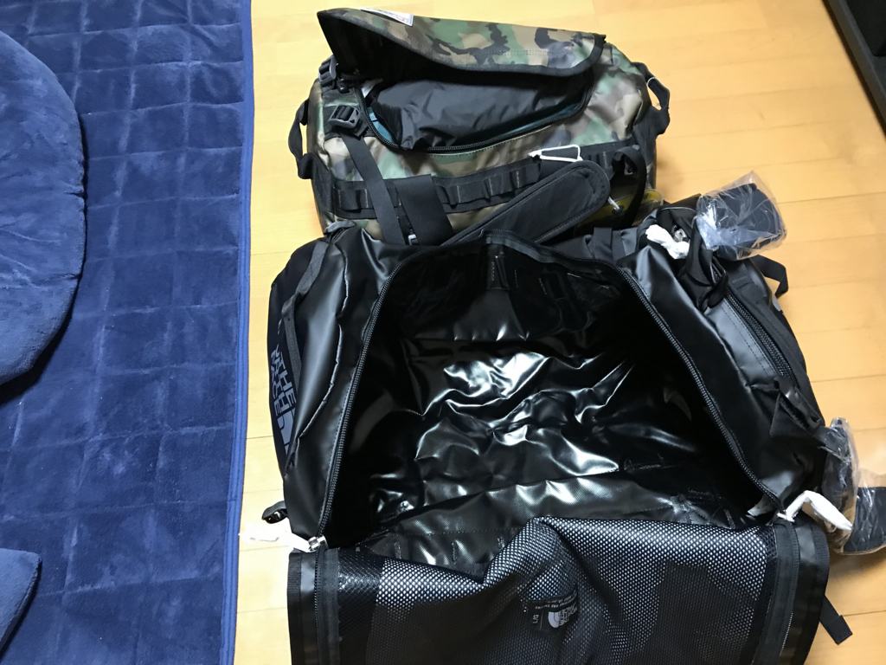
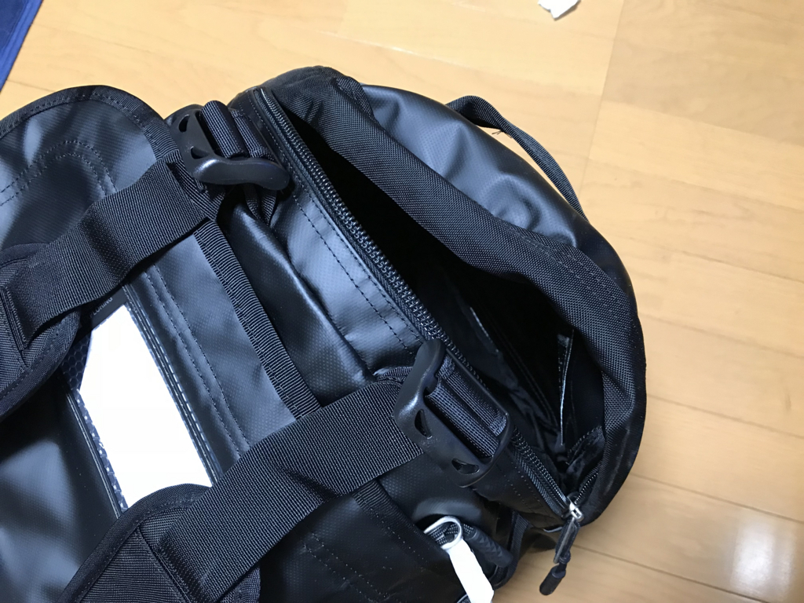

日記：『魔法使いの嫁』＋ノースフェイスのデカいダッフルバッグ
公開日：
日曜日、晴れ。陽気に誘われて、松山城にでも出かけようか……と思ったのだけど、結局、父とはま寿司＋明屋書店コースだった。
回る寿司、こういう邪悪なのが食べられるのがメリットではないかと最近思い始めて、積極的に摂取するようになった pic.twitter.com/Y4WH8vwq8O
— ヴァイオレット・ダルーガーデン (@daruyanagi) 2018年3月25日
はま寿司は、行列はないが、空きも目立たない、という絶妙な空き具合。結局、二人で24皿ほど食べた。父が最初のビールを肘鉄でひっくり返し、俺の和服がびしょびしょになったけど、今日のはデニムなので洗えば問題はない。それよりも、店員さんが集まって、こぼしたビールを拭いてくれているのに（すみませんです……ありがとうございました！）、父は礼の一つもない。昔はこれほどではなかったと思い、少し驚く。固陋、膏肓に至るの感があるが、どう教育すればよいのだろうか。いずれ自分もこうなってしまうのだろうか。
それはともかく、Amazon でマンガの『魔法使いの嫁』がセールだったので、8巻まとめ買いした。
")
- 作者: ヤマザキコレ
- 出版社/メーカー: マッグガーデン
- 発売日: 2014/06/14
- メディア: Kindle版
- この商品を含むブログ (6件) を見る
割引だわ、ポイントは付くわで、ほぼタダみたいなお値段だった。今アニメをやっているのは知っていたけど、最近はアニメを観る体力がないし、マンガの方がいいな。
いろいろな過去があって自己肯定感ゼロの少女が、歳こそ重ねているが精神年齢が幼い・骨顔の魔法使いに買われて、弟子兼将来の嫁候補になる――みたいな話だけど、ケルトっぽい世界観が大変よろしい。ちょっと少女漫画っぽい？ けど、女性向けのコンテンツの方が、おっさん向けよりも心理描写が深い感じがあって、自分は割と好きかもしれない――稀によくあるご都合主義的展開に我慢できれば（本作にはない）。最初はハートフルな進行でマンガの世界観を読者に一つずつ明らかにしていく感じだったけど、最近では互いにわがままを覚え始めて、すれ違いや亀裂にテーマが移りつつある。最近は心が弱いので、そういうのはあまり読みたくないのだけど、それでも惹かれるところがある。
ってか、ドラゴンの子ども、かわいい(n*´ω`*n)
本物の嫁もKindleで確保できればいいんだけどなぁ
— れい(こけもも) (@rei_software) 2018年3月23日
あと、ノースフェイスのデカいダッフルバッグを買った。
![[ザ・ノース・フェイス]リュック BC Duffel L ブラック](https://images-fe.ssl-images-amazon.com/images/I/41yjU9xJn4L._SL160_.jpg "[ザ・ノース・フェイス]リュック BC Duffel L ブラック")
[ザ・ノース・フェイス]リュック BC Duffel L ブラック
- 出版社/メーカー: THE NORTH FACE
- メディア: ウェア&シューズ
- この商品を含むブログを見る
このバッグは XS サイズをすでに持っていいて気に入っていた（丈夫で耐水！ 一室構造でいっぱい入る！ なんなら背負える）のだけど、キャンプ道具を入れるには少し小さかったので、2サイズ大きいのがほしかった。

2つを比べると、デカ差は歴然。
- XSサイズ （45×28cm/31L）
- Sサイズ （53×32.5cm/50L）
- Mサイズ （64.5×35.5cm/71L）
- XLサイズ （75.5×45cm/132L）
- XXLサイズ （80×48cm/150L）
正直、M でも十分だったかもしれないけど、バイクの後ろに積むとき、シート＋サイドケース×2 の幅にそろえると L サイズぐらいになると思う。どうせなら、幅めいいっぱい大きい方がいいし、幅が70cmあれば積載できるキャンプ道具の幅も広がる。隙間があると荷崩れがこわいけど、それはそれ、サイドに4本あるコンプレッションストラップでちゃんと絞ればいいわけで……むしろ、背負うことを考えて荷物を入れないと、荷物が下に降りてきてバランス崩れそう。でも、これはスペースがフリーに使えるというメリットの代償だから、とくに欠点というわけではない。

あと、このサイズには上部（← 縦に背負うとき）に小物入れが付いているのもいいと思った（M とかにもあるみたいだけど）。シンプルな一室構造は使いやすいけど、小物を収めるところに悩む ＆ 適当に放り込むと迷子になりやすかった。メインの格納部分の"フタ"の裏にメッシュで小物入れっぽいスペースはあるのだけど、せいぜい書類を入れたり、ハンカチ・タオルを仕込んでおく程度にしか使えない。そうしたちょっとした不満が解消されているのは大変よい。
色は派手な黄色あたりをチョイスしたかったけど、注文ボタンを押すときにヒヨってしまい、黒になった。つい無難なのを選んじゃうのは自分のダメなところだと思う。